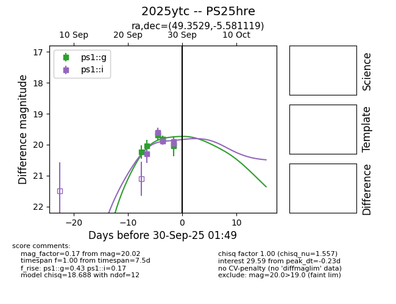
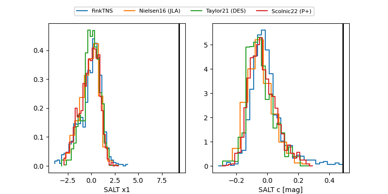

TNS: 2025ytc
YSE: 2025ytc
2025ytc (yse,tns)
PS25hre (panstarrs)
equatorial (ra, dec) = (49.3529,-5.58112)
galactic (l, b) = (187.7516,-49.15127)


last ps1::g=20.02, ps1::i=19.96
8 ps1::g, 7 ps1::i detections